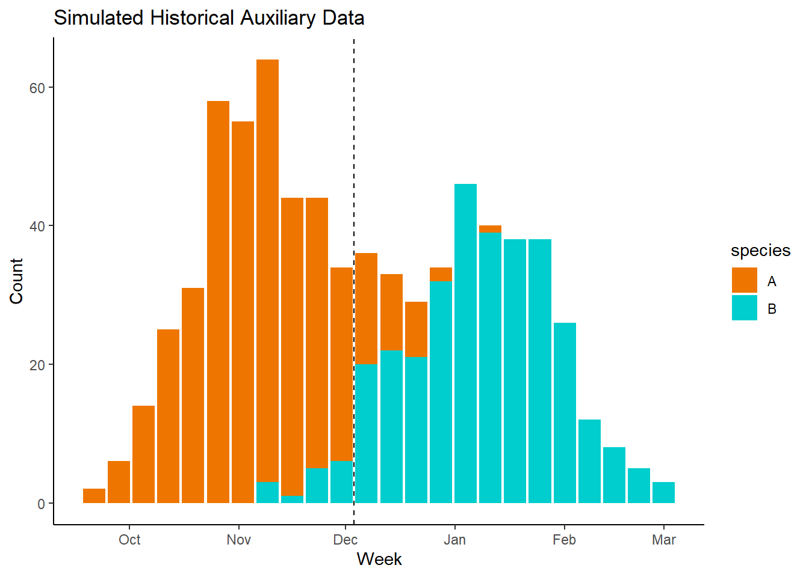

Perhaps the simplest method to speciate between two different fish species in a study would be to incorporate historical run-time and catch/escapement data proximate to the sonar study area in a method we can refer to as an “in-season cutoff”(Nolan et al. 2023). Here we’ll simulate some historical auxiliary count data for two different species, “A” and “B”, using the same methods as above to get the following weekly_aux data.
head(weekly_aux)
# A tibble: 6 × 3
Week species Total_Count
<date> <chr> <int>
1 2009-09-21 A 2
2 2009-09-28 A 6
3 2009-10-05 A 14
4 2009-10-12 A 25
5 2009-10-19 A 31
6 2009-10-26 A 58
This auxiliary data set shows the weekly counts of our two target species for a run 13 years prior to our sonar data at a proximate location. Obviously a more proximate (in both space and time) auxiliary data set could be more representative of our sonar samples, and thus more applicable. However, often the auxiliary data available is not the most optimal, and so we have to use the best data available.
This historical data set can be used to produce an “in-season cutoff”, essentially finding a date in the historical data when the proportion of species B is greater than species A. We can then apply that date to our sonar data, and assign any fish observed before that date as “A” and after as “B”. To utilize an “in-season cutoff” we need to find the week when the proportion of species B captured was higher than the count of species A. We can use the following code to first estimate the proportion of each species for each week fish were caught:
# Calculate proportions and reshape in one stepproportions_combined <- weekly_aux %>%group_by(Week) %>%mutate(total_n =sum(Total_Count)) %>%mutate(proportion = Total_Count / total_n) %>%select(Week, species, proportion) %>%pivot_wider(names_from = species,values_from = proportion,names_prefix ="proportion_") %>%ungroup()
Now we can easily find the first week in our data when the count of species B is greater than species A.
# Find the first week where the proportion of species A is greater than Bresult <- proportions_combined %>%filter(proportion_B > proportion_A) %>%slice(1)result_week <- result$Week# Output the first weekresult_week
[1] "2009-12-07"
The above shows us that 2009-12-07 was the first week in which the count of species B was greater than the count of A in our auxiliary data.
We can plot the distribution of the data here along with our cutoff:

Plot showing species counts of auxiliary historical hatchery data set. Dashed line represents ‘in-season cutoff’.
Using this historical auxiliary data set, we can decide to set our cutoff to the date of 2009-12-07, and assign any fish detection in our sonar data before that date as species A, and any after as species B.
With the above snippet we can see that our final estimates of sonar counts are 922 for species A and 1078 for species B. We know that our simulated data had a count of 116 for species A and 103 for species B, so we had an error rate of -694.8275862%.
The above method of speciation, while simple, provides a straightforward approach for leveraging historical data to infer species composition in sonar detection studies. Key assumptions to realize when utilizing this method are:
All fish being speciated are either one of two species.
There is no overlap in run timing.
Date based threshold of the auxiliary data is representative of the sonar site.
Date based threshold used is consistent between years.
Real world systems will likely violate one or more of the above assumptions, so the use of this method is likely to bias species identifications and resulting count estimates. Our simulation had an overlap in run timing and variation in the distributions that resulted in an over-count of species B and an under-count of species A.
References
Nolan, Jesse, Erika Partee, Jennifer Jacobs, and Ryan Nelson. 2023. “2021-2022 Sonar-derived estimates of Chinook Salmon Prepared by :” April. Tolowa Dee-ni’ Nation.